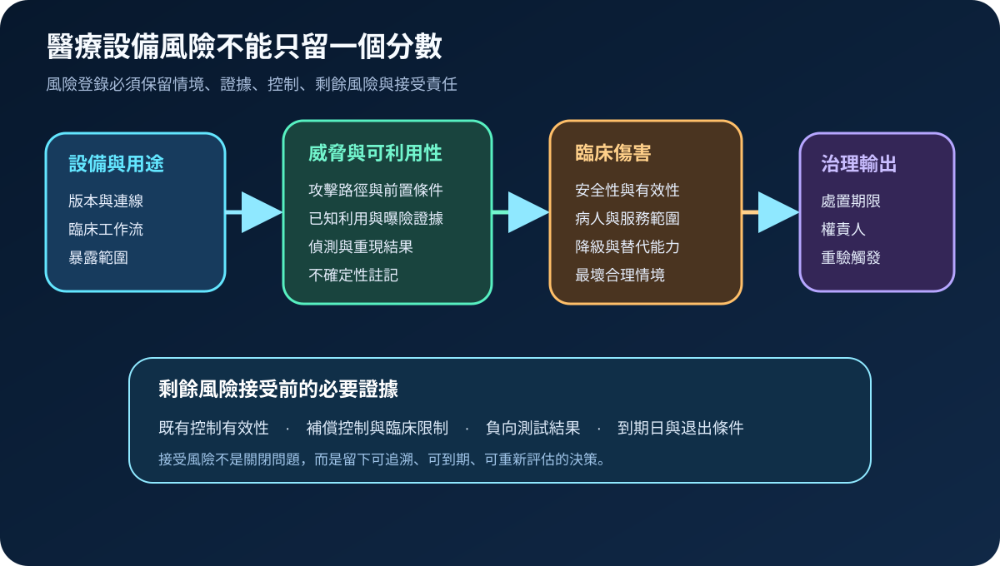
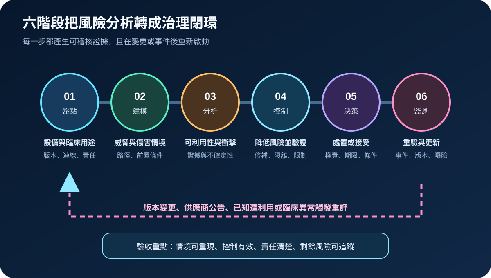
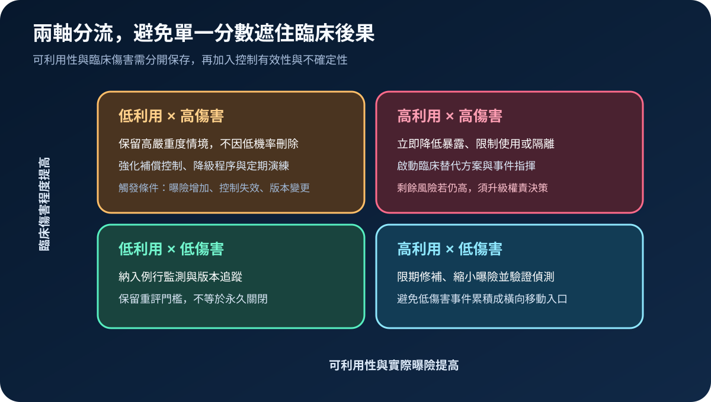

醫療資安國際觀察 · 2026-11-12
醫療設備資安風險如何進入院級風險登錄：從可利用性到剩餘風險接受
作者：Dr. William｜醫療資訊與資安治理實務工作者
醫療設備弱點若只留下 CVSS 或單一高、中、低分級，容易遺失實際版本、攻擊前置條件、病人傷害、補償控制與決策責任；院級風險登錄的目的，是讓風險可追蹤、可到期、可重新評估。
名詞解釋：可利用性、臨床傷害與剩餘風險
可利用性描述攻擊是否能在實際設備、網路與權限條件下成立；臨床傷害涵蓋設備安全性、有效性、資料完整性與服務中斷對病人的影響；剩餘風險是修補、隔離、監測、使用限制或臨床替代措施完成後仍存在的風險。風險接受必須指定權責人、期限、適用條件及重新評估觸發點。
國際現況與適用邊界
FDA 於 2026 年 2 月發布醫療設備上市前資安最終指引，要求製造商在風險管理中考量威脅模型、可利用性、病人傷害嚴重度、控制措施與生命週期證據。NIST IR 8286A Rev. 1 於 2025 年 12 月發布，說明如何辨識、分析、記錄及優先處理資安風險，並把資安風險登錄連到企業風險管理。IMDRF N60 則以醫療設備全生命週期與共同責任說明製造商、醫療服務提供者、使用者及其他利害關係人的角色。前述內容分屬美國產品監管、一般風險管理方法與國際醫療設備原則，不是台灣醫療機構的直接法定義務。
台灣適用原則：可將國際方法轉成院內設備清冊、採購驗收、弱點處置、臨床風險會議及風險接受紀錄；實際責任與門檻仍須依台灣醫療器材、資安、個資、醫療品質及院內治理程序確認。
規劃：先定義風險登錄的最小資料集
每筆風險至少應包含設備識別與版本、臨床用途、網路位置、威脅情境、受影響功能、可利用性證據、病人與服務影響、既有控制、控制驗證結果、剩餘風險、處置方案、權責人、到期日及重評條件。若資料不足，應明列不確定性，不以空白或假設值取代。
實作：六階段形成可追蹤閉環
- 盤點：把設備、軟體版本、連線、臨床用途與責任單位對齊。
- 建模：描述攻擊路徑、前置條件、病人範圍及最壞合理後果。
- 分析：分開記錄可利用性與臨床傷害，附來源、日期與不確定性。
- 控制：選擇修補、隔離、權限限制、監測、使用限制或替代流程並測試。
- 決策：完成處置、升級或條件式接受，指定權責與到期日。
- 監測：遇到版本變更、供應商公告、已知遭利用或臨床異常時重評。

風險：把低可利用性誤寫成低臨床風險
低可利用性不代表後果可忽略，高傷害情境仍需補償控制、臨床降級與演練。相反地，高可利用但暫時低傷害的弱點，也可能成為橫向移動、權限擴張或後續組合攻擊入口。分流時應保留兩軸判斷，再加入控制有效性、曝險時間與證據可信度。

可執行清單
- 風險紀錄是否連到唯一設備、版本、位置與臨床用途？
- 可利用性是否以實際網路、身分、權限與攻擊路徑驗證？
- 是否分開記錄技術衝擊、病人傷害與服務中斷？
- 補償控制是否完成負向測試與臨床流程驗證？
- 接受風險是否有權責人、到期日、限制條件與退出方案？
- 版本變更、已知利用、控制失效或臨床事件是否會自動觸發重評？
來源
- FDA｜Cybersecurity in Medical Devices: Quality System Considerations and Content of Premarket Submissions（發布：2026-02-03；查閱：2026-11-12）
- NIST｜IR 8286A Rev. 1, Identifying and Estimating Cybersecurity Risk for Enterprise Risk Management（發布：2025-12-18；查閱：2026-11-12）
- IMDRF｜Principles and Practices for Medical Device Cybersecurity, N60（發布：2020-03-18；查閱：2026-11-12）
內容說明
本文依健康台灣深耕計畫相關治理內容整理，並參考 FDA、NIST 與 IMDRF 一手資料，說明醫療設備資安風險登錄、控制證據、剩餘風險與權責接受；不把美國上市前指引、NIST 方法或 IMDRF 原則視為台灣醫療機構的法定義務，也不取代主管機關規範、醫療器材評估、臨床驗證、風險管理或法律意見。